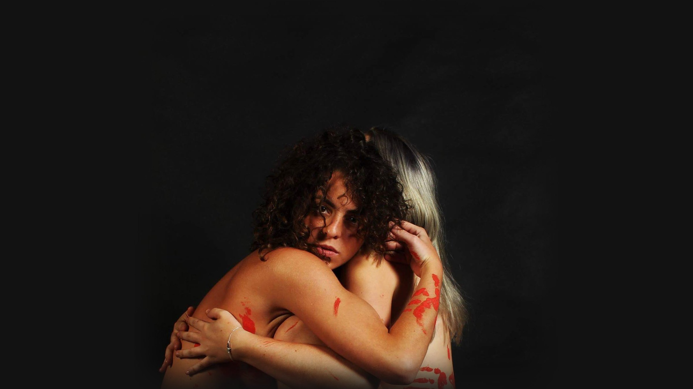
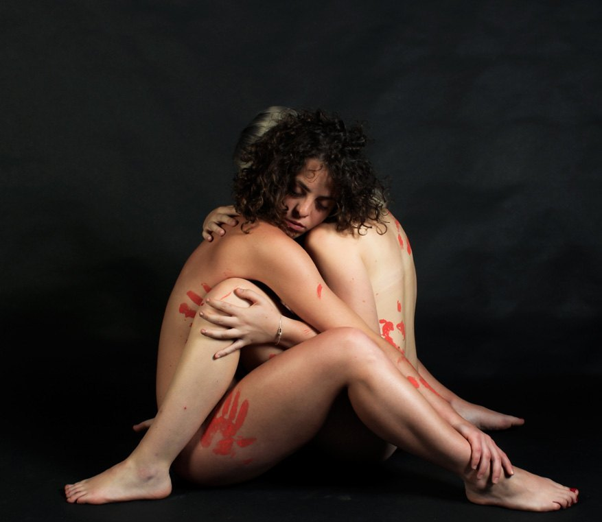
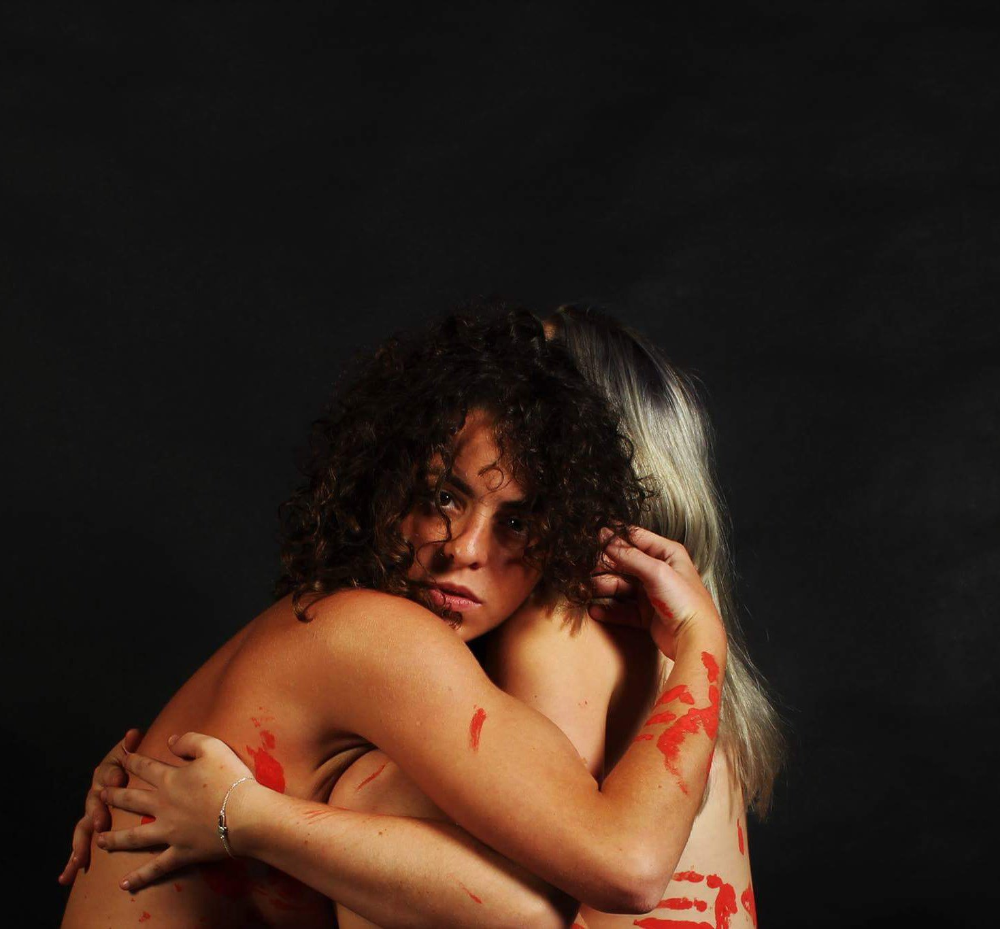
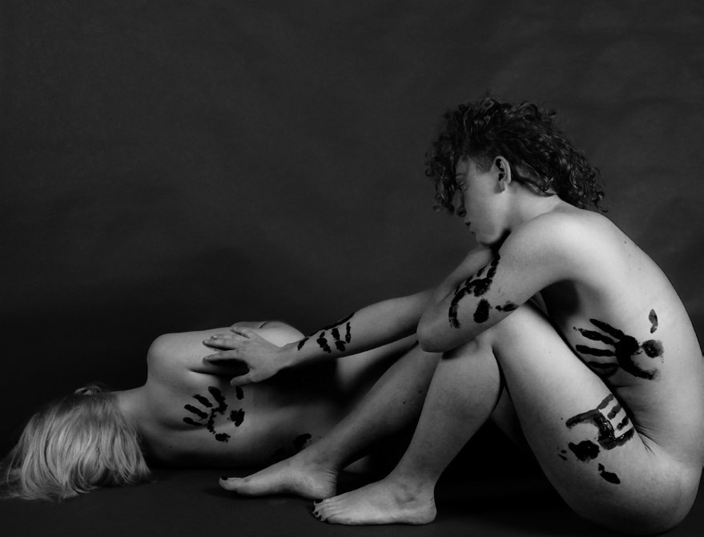

Handprint
Le macchie sono segni indelebili sulla pelle. Handprint è un progetto fotografico contro la violenza sulle donne: impronte rosse sui corpi, e due donne che si cercano per non restare sole.


Solidale, indelebile, rosso
La violenza di genere non è solo aggressione fisica: è anche ricatto, minaccia, persecuzione. Le impronte sono i segni che restano; i corpi che si stringono, la solidarietà tra donne.
